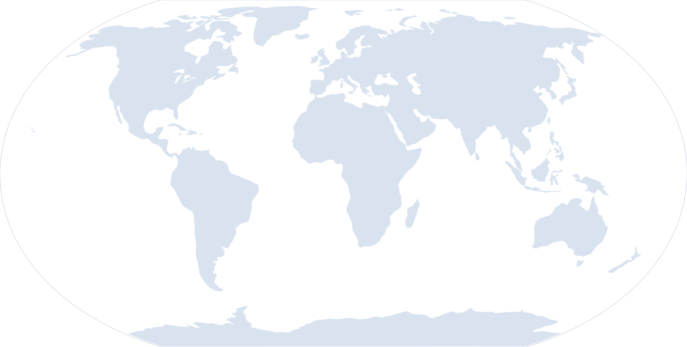

Analytics Intelligence Center
Welcome back, Alex Morgan
Acquisition, engagement, conversion and anomaly intelligence across the customer journey.New analysis
This action is recorded locally in the current session. Connect the same action contract to your API or workflow when integrating the application.
Analytics Intelligence Center
Contextual dashboard action
Traffic growth with stronger engagement
Sessions, engaged users and conversion are moving together across the latest 30-day measurement window.
Revenue influenced
$6.09M
+18.6% MoM
39.0K
Active users
30-day audience
42.2K
Sessions
qualified visits
68.4%
Engagement rate
high-intent traffic
5.15%
Conversion rate
goal completion
Realtime measurement pulse
What is happening now, plus the signals worth watching.
1,284
Active now
last 5 minutes
4.8K
Events / min
+16% vs baseline
3m 12s
Avg. engagement
+19 sec today
86
Conversions now
5.4% live CVR
AI anomaly radar
Mobile Safari checkout exits are 18% above the expected range.
Investigate anomalyEnterprise sample submitted
Pricing · Organic
Checkout completed
Mobile · Direct
Traffic spike detected
Integrations · Referral
Acquisition mix
Traffic volume and quality by acquisition source.
Organic search
31.8K · 72% engaged
38%
Direct
22.6K · 68% engaged
27%
Paid social
17.6K · 61% engaged
21%
Referral
11.7K · 74% engaged
14%
Conversion journey
Where traffic turns into intent and completed goals.
Visitors
84,200
Engaged
57,600
Intent
24,900
Converted
4,336
Visitor → intent
29.6%
Intent → converted
17.4%
Engagement heatmap
High-intent activity by weekday and time window.
Geographic intelligence
Market scale, conversion quality and influenced revenue.

United States
67.5K sessions · 5.8% CVR
$2.46M
+12.8%
India
21.4K sessions · 4.9% CVR
$684K
+18.6%
Germany
15.8K sessions · 5.4% CVR
$518K
+7.9%
Australia
11.2K sessions · 5.1% CVR
$406K
+10.4%
Device & browser quality
Conversion efficiency by device with browser mix underneath.
Top pages & intent
Pages ranked by views, engagement depth and downstream conversion.
| Page | Views | Engagement | Avg. time | Conversion | Intent |
|---|---|---|---|---|---|
| /pricing | 18.4K | 78% | 4m 18s | 8.4% | High |
| /products/analytics | 16.8K | 74% | 3m 52s | 7.2% | High |
| /integrations | 13.2K | 69% | 3m 06s | 5.8% | Medium |
| /customers | 10.6K | 71% | 2m 48s | 5.1% | Medium |
| /blog/ai-operations | 9.8K | 66% | 4m 42s | 3.9% | Assist |
AI Analytics Investigator
Anomalies, opportunities and suggested investigation paths.
Checkout anomaly
+18% exits
Mobile Safari exits rose after the latest checkout release.
Organic acceleration
+26% intent
Pricing and integration pages gained high-intent organic traffic.
Campaign quality
2.4× CVR
Partner referrals are converting above paid social despite lower volume.